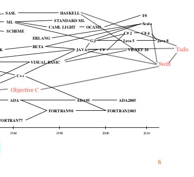

Version 00x0.0.0.0.0.1.1.1
Thomas Magnusson - All current work - tommagnusson
Daniel Gisolfi - Markdown template author - dgisolfi
Todo stands on the shoulders of design giants such as Swift, Rust, C, Python, Java, JavaScript, TypeScript, and many more countless modern languages whose subtle influences have inflitrated its design borders.
It is meant as a modern, general purpose, object oriented language for casual projects, and focuses on expressivity and orthogonality over performance or features.
Some of the main concepts it borrows:
const vs let)Struct value semantics from Swift, Rust, and C
The most basic of programs implemented in Todo.
// in hello.todo public (args) => print("hello world")
public denotes the visibility of the closure. If there's only one public closure within a Module (in this case, the file) then it will be run. This is akin to a main function. Note the arrow closure notation like JavaScript, and the simple print function which is automatically available because every module implicitly imports the language library, which includes print.
$ todo hello.todo
$ hello world
Todo key organizational concepts
.todoFile Recipe.todo:
import Ingredients from './ingredients.todo' // Struct types are pass-by-copy, but are passed around with // shared pointers until they're written to (copy on write) public struct Recipe { // note the 'get', meaning directions is read only externally // we are free to modify the directions internally though public get directions: String public get ingredients: [Ingredients] // this is a constructor which takes in two arguments // type is denoted using a colon after the parameter name Recipe(directions: String, ingredients: [Ingredient]) { // note self, taken from Swift, just like 'this' in Java or JavaScript self.directions = directions // equals = assignment... self.ingredients = ingredients; } // `pure` means that this function produces no side-effects, can only use read-only copies of variables public pure render = { // note the "string ${interpolation}" from JavaScript // can optionally be explicit about type using : let ingredientList: string = ingredients.map((i) => "<li>${i.toString()}</li>").reduce((i1, i2) => "${i1}${i2}") return "<p>${self.directions}</p><ul>${ingredientList}</ul>" } // every struct (and class) has a toString function // override is to override it // I'm assigning the render function to be its toString function as well public override pure toString = self.render }
Recipe.todo only coincidentally has a struct of the same name declared inside of it. The struct Recipe would be used to render some directions and ingredients in a web application, perhaps. The constructor takes in directions and ingredients, and then has a pure render function which renders the HTML to display the two instance variables together. A caller who has imported this struct would call let recipe = Recipe("Cook it", [new Ingredient("bacon")] to create an instance of a recipe struct.
Todo offers two main flavors of types: struct and class.
struct is the bread and butter of most data within a Todo program, and offers value semantics. They are meant to be lightweight, mostly read-only structures that hold information and contain the occasional convenience methods. They are pass by value, but are typically passed around through a pointer until written to, at which point they are copied and modified in the appropriate scopes.
class is the familiar, object-oriented reference type that offers inheritence and composition through interfaces and abstract classes. It is meant for heavy objects such as connections to databases and pointers to large amounts of deeply nested data structures.
struct and class types are instantiated with very similar syntax and have many syntactic similarities, despite having wildly different performance impacts.
Array Literals and Struct Instantiation
In Todo:
// creates an array with one instance of ingredient within it // and assigns it to ingredients let ingredients = [Ingredient("1 juicy Lime"), Ingredient("1 large Coconut")] let recipe = Recipe("Put the lime in the coconut and shake it all up", ingredients) // let IS NOT the same as let in JavaScript... // let IS THE SAME as in Swift (i.e. cannot reassign or redeclare) let html = recipe.render()
In Java:
Ingredient[] ingredients = new Ingredient[] { new Ingredient("1 juicy lime"), new Ingredient("1 large coconut") }; Recipe recipe = new Recipe("Put the lime in the coconut and shake it all up", ingredients); String html = recipe.render();
String Interpolation
In Todo:
let age = 20 let name = "Tom" let greeting = "Hello ${name}, I heard you're ${age} years old" print(greeting) // "Hello Tom, I heard you're 20 years old"
In Java:
int age = 20; String name = "Tom"; String greeting = "Hello " + name + ", I heard you're " + age + " years old"; System.out.println(greeting);
Anonymous Function
In Todo:
// there are no such things as "methods" that are declared as part of a class // All functions are always treated as variables (objects) themselves // They're differentiated using their type signatures, which are polymorphic let anonymous = (message: String) => { print("A message: ${message}") } // other form (heavily inspired by swift): let anonymous = { print("A message: ${$0}) }
In Java:
// not too bad, just not as short as using $0 for positional args let anonymous = (message) -> System.out.println("A message" + message)
A Todo program consists of one or more source files. A source file is an ordered sequence of Unicode characters according to the Unicode Standard, and supports UTF-8 and UTF-16 encoding formats.
Conceptually speaking, a program is compiled using three steps:
Todo also offer a REPL (read, evaluate, print, loop) that acts like an ML REPL. It offers a short circuit version of the steps described above.
unicode -> unicode character
letter -> "A"..."Z"
decimal -> "0"..."9".
identifier -> <letter>([<letter> | decimal])+
integer_literal -> <decimal>
-> <decimal><integer_literal>
real_literal -> <integer_literal>.<integer_literal>
string_literal -> "(<unicode>)*"
array_literal -> []
-> [<expression>]
-> [<expression>, (<expression>)+]
enum_literal -> [<expression>]
-> [<expression> | (<expression>)+]
Array access is an interesting grammar to examine. Java has very simple array accessess, without any of the range syntax. Swift offers a little more, but I add on the unbounded range to take a slice of an array from one number to the end of the array.
<import statement> -> import <identifier>
-> import <identifier> from <identifier>
-> import <identifier> from <string_literal>
<unbounded range> -> <integer_literal>..
-> <identifier>..
<inclusive range> -> <unbounded range>.<integer_literal>
-> <unbounded range>.<identifier>
<exclusive range> -> <unbounded range><integer_literal>
-> <unbounded range><identifier>
<range> -> <inclusive range>
-> <exclusive range>
<array_accessor> -> [<identifier>]
-> [<integer_literal>]
-> [<range>]
-> [<unbounded range>]
-> [<expression>]
Comments in Todo are standard, C-style, and do allow nesting. Because there's nothing more annoying than testing stuff out and breaking the syntax of a language by trying to comment out a large piece of code that contains comments. Seriously, why do so many fictitious languages not have nested comments?? We don't even have to implement this! Also, this language is called Todo, which suggests excellent comment semantics. Allowed nested comments is an example of this.
Multline
/*
TODO:
Todo
*/
Single line
// TODO: todo
There are several kinds of tokens: identifiers, keywords, literals, operators, and punctuators. White space and
comments are not tokens, though they act as separators for tokens where needed.
Tokens:
A keyword is an identifier of characters that is reserved, and cannot be used as an idenfitier, unless it is surrounded in back ticks, as in `class`.
Adopted from Swift and Java
class public private implements interface extends static
Adopted from Swift
get set let var self struct override _
new
pure module from
As stated before, value types can be created using struct objects. They have enormous influence from Swift's struct constuction.
The standard library has a lot of examples of structs:
String - created using String literals
let s = "Hello Alan"
Integer - created using Integer literals
let i = 0
Real - created using Real literals
let pi = 3.14
Create your own money struct:
public struct USD { public get dollars: Integer public get cents: Integer public USD(dollars: Integer, cents: Integer) { self.dollars = dollars self.cents = cents } public override pure toString = { return "$${dollars}.${cents} USD" } }
Reference types are created using the class keyword, which has all the classical object oriented design principles baked into it, including inheritance, polymorphism, composition, etc.
import HttpConnection from Network import fetch from Network.Fetch public class DatabaseConnection { public dbName: String public connection: HttpConnection public DatabaseConnection(username: String, password: String, dbName: String) { let url = "${username}@${dbName}" fetchDb(url, password).then({ print("Connected to ${$0.db}!) }) } }
File caesar.todo:
public (args) => { // returns an array of single let a = "A".charCodes()[0] let z = "Z".charCodes()[0] // where % is modulo let wrapUp = z - (a - ($0 + 1) % 26) let wrapDown = a + ((($0 - 1) - z) % 26) let wrap = { if($0 > a) return wrapDown($0) if($0 < z) return wrapUp($0) return c } // The compiler figures out the most general type for // $0 that makes it available for comparison with // a and z, which are Integers... // Perhaps the compiler guesses it's either Integer or Real... let isBetweenAZ = ($0 >= a) && ($0 <= z) let addBetweenAZ = (shift: Integer, charNum: Integer) => { return isBetweenAZ(charNum) ? wrap(charNum + shift) : charNum } let subtractbetweenAZ = (shift: Integer, charNum: Integer) => { return isBetweenAZ(charNum) ? wrap(charNum - shift) : charNum } // note the higher order function partial shift let crypt = (phrase: String, partialShift: (Integer -> Integer)) => { // note the static "method" on the String struct return String.fromCharCodes(phrase.toUpperCase() .charCodes() .map({ partialShift($0) })) } // notice the * operator, which extracts the first argument // out of the function, enabling a partial application of shift // to the method let encrypt = (phrase: String, shift: Integer) => crypt(phrase, addBetweenAZ*(shift)) let decrypt = (phrase: String, shift: Integer) => crypt(phrase, subtractBetweenAZ*(shift)) let solve = (phrase: String, maxShift: Integer) => { // [lo...hi] range constuctor for an array [0...maxShift].forEach({ print("${$0}: ${decrypt(phrase, $0)}") }) } let phrase = "az za" let shift = 1 print(phrase) print(shift) let encrypted = encrypt(phrase, shift) print(encrypted) print(decrypt(encrypted, shift)) solve(phrase, 26) }
File factorial.todo:
import factorial from Math public { print(factorial($0) } // jk...
public (args) => { // ? : ternary from Java // == value identity, not reference identity (JS got that wrong) let factorial = { $0 == 0 : 1 ? $0 * factorial($0 - 1) } print(factorial(5)) // 120 }
File mergesort.todo:
// Based on a tutorial https://www.raywenderlich.com/741-swift-algorithm-club-swift-merge-sort public (args) => { let merge = (left: [Integer], right: [Integer]) => { // compares left and right using the function passed in // the return value of the function is the next appended value // _ is the "null" or "nil" value in the language return Array.zip(left, right, (l, r) => { if(l == _) return r if(r == _) return l if(l > r) return r return l }) } let mergeSort = (array: [Integer]) => { // base case, single arrays are sorted if(array.length == 0 ) return array let middle = array.length / 2 // .. is non-inclusive range [lo..hi) // access slices of arrays with ranges using brackets [] let left = mergeSort(array[0..middle]) let right = mergeSort(array[middle..array.length]) return merge(left, right) } }
File linkedlist.todo:
// Note generics using classic <TypeHere> // Inspired by TypeScript, Java, Swift, and a ton more object oriented languages class LinkedList<T> { public head: Node<T> = _ public LinkedList() {} public add = (datum: T) => { // var references can change var tmp = self.head while(tmp != _ && tmp.next != _) { tmp = tmp.next } tmp.next = Node(datum, _) } public pop = () => { if(head == _) return _ let tmp = Node(head) head = head.next return tmp } public peek = () => { return Node(head) } class Node<D> { public get datum: D public next: D public Node(datum: D, next: Node<D>) { self.datum = datum self.next = next } // overloaded constructor for copy public Node(node: Node<D>) { self.datum = node.datum self.next = node.next } } }
File merkletree.py:
import hash from Crypto.SHA256 import Math class MerkleTree<T> { public get root: Data<T> MerkleTree(leafData: [T]) { let leaves = leafData.map({ Node($0) }) let numLeaves = leaves.length if(numLeaves == 1) { self.root = leaves[0] } let nextPowerOfTwo = Math.pow(2, Math.ceil(Math.log(numLeaves) / Math.log(2))) let exremainder = nextPowerOfTwo - numLeaves let whenToStop = numLeaves - exremainder let penultimateLevel: [Node<T>] = [] Array.chunk(leaves[whenToStop..], 2).map({ penultimateLevel.add(Node($0[0], $0[1])) }) penultimateLevel.add(leaves[0..whenToStop]) return } class Node<D> { // create a simple enum whose underlying value is constrained to // the types within the [], delimited by | enum Type: String = [LEAF = "leaf" | INTERNAL = "internal"] public get type: Type public get datum: D public left: Node<D> = _ public right: Node<D> = _ // base case for leaf public Node(datum: D) { self.type = Type.LEAF self.datum = datum } // base case for internal public Node(left: Node<D>, right: Node<D>) { self = Node(hash("${left == _ ? "" : left.data}${right == _ ? "" : right.data}") self.type = Type.INTERNAL self.left = left self.right = right } // recursive construction of subtree using list public Node(nodes: [Node<D>]) { if(nodes.length == 1) return nodes[0] int i = nodes.length / 2 let left = nodes[0..i] let right = nodes[i..] // stops sounding like a word after a while, right? return Node(Node(left), Node(right)) } } }
{kind=link}